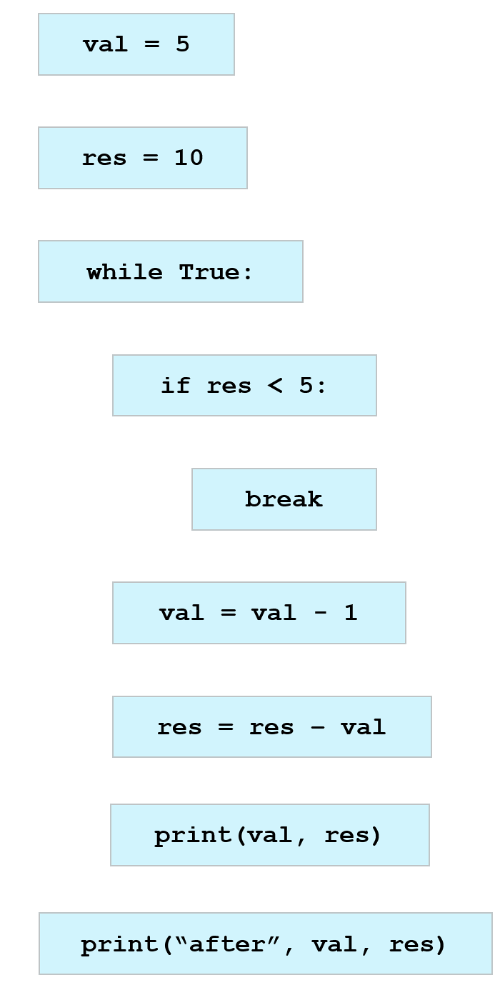

Page 1

Translate each English statement into Python syntax by selecting the translation from the drop down menu (access it by clicking on the box next to the statement).
Assign the number 5 to variable val
Assign the number 10 to variable res
Start a loop that will repeat indefinitely
Check if value of res is less than 5 and if so
Stop the loop; jump to the line right after loop
Reduce the value of val by 1
Reduce the value of res by the value of val
Print the values of val and res to the screen
Print "after" and the values of val and res to the screen